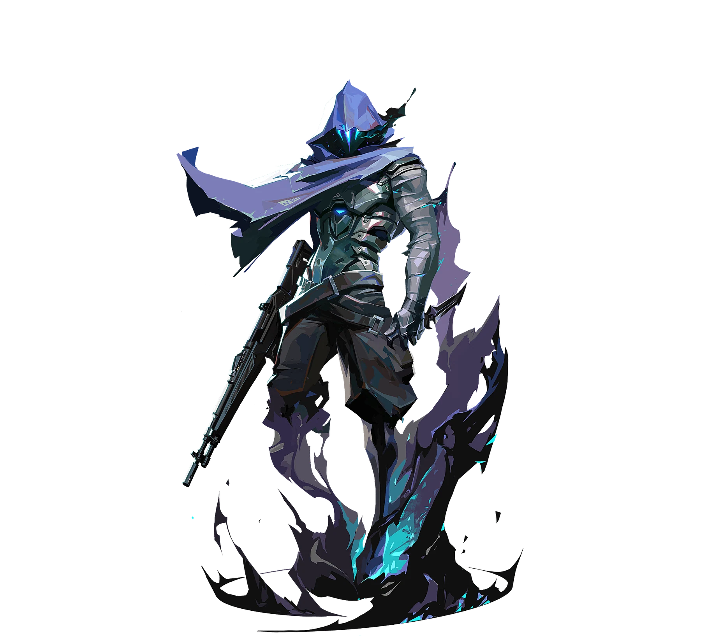

JD Gaming / 李翱
crownfisher.
ALL IN. EVERY ROUND.
Omencrownfisher / 李翱
crownfisher / 赛场档案IN EVERY
IN EVERY
ROUND.
2026-10-02 / crownfisher2026-09-27 / crownfisher2026-08-23 / crownfisher2026-08-21 / crownfisher
1 : 2
JDG / T1
↗Champions 2026 Group Stage ⋅ Elim (A)
Lotus 11 - 13 R 1.37 K / D / A 22 / 17 / 140 : 2
JDG / FUT
↗Champions 2026 Group Stage ⋅ Opening (A)
Ascent 1 - 13 R 0.30 K / D / A 4 / 13 / 01 : 3
JDG / TYL
↗VCT 26: CN Stage 2 Playoffs ⋅ GF
Lotus 13 - 6 R 0.85 K / D / A 10 / 13 / 112 : 0
JDG / BLG
↗VCT 26: CN Stage 2 Playoffs ⋅ UBF
Lotus 13 - 7 R 1.03 K / D / A 14 / 11 / 10人物 × 比赛数据海报 · 点击打开原始记录
英雄池 / 按职业出场地图排序
HEROES
ON DUTY.
每一次选下英雄，都是另一种表达。Omen.
幽影 / 61% 使用占比
27出场地图
184.8平均战斗评分
0.94击杀 / 死亡
372总击杀
31首杀
VLR 全时期已收录职业数据 · 2026-11-02 快照 · 出场单位为地图，使用占比不是胜率。查看该选手原始统计
EVERY
ROUND.
44职业地图
620总击杀
0.93全英雄 K/D
Champions 2026 Group Stage ⋅
Elim (A)
JDG / T11 : 2+
Champions 2026 Group Stage ⋅
Opening (A)
JDG / FUT0 : 2+
VCT 26: CN Stage 2 Playoffs ⋅
GF
JDG / TYL1 : 3+
VCT 26: CN Stage 2 Playoffs ⋅
UBF
JDG / BLG2 : 0+
VCT 26: CN Stage 2 Playoffs ⋅
UBSF
JDG / TYL2 : 1+
最近已收录系列赛；日期和比分沿用 VLR 公开记录。上方生涯总计由全英雄表求和，K/D 为总击杀除以总死亡。
下一位 / JDG 阵容